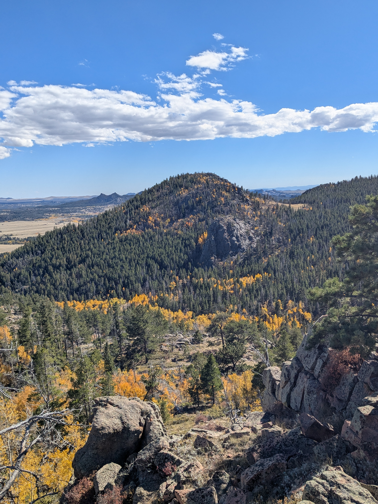
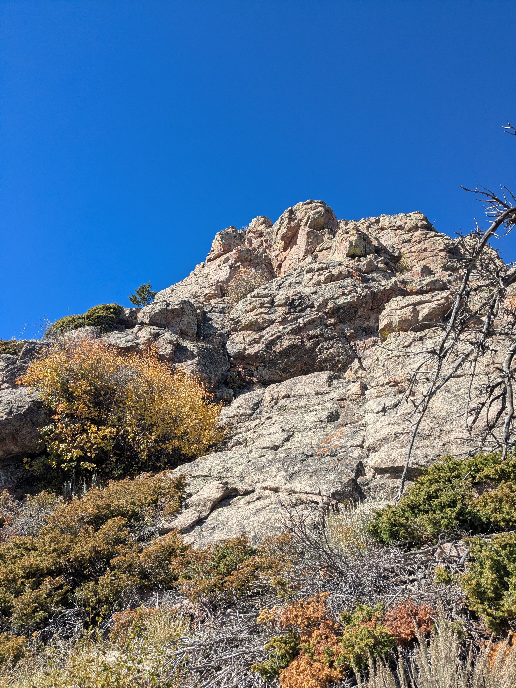
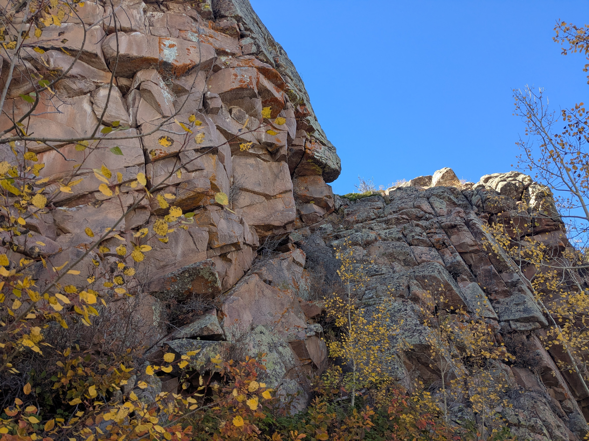
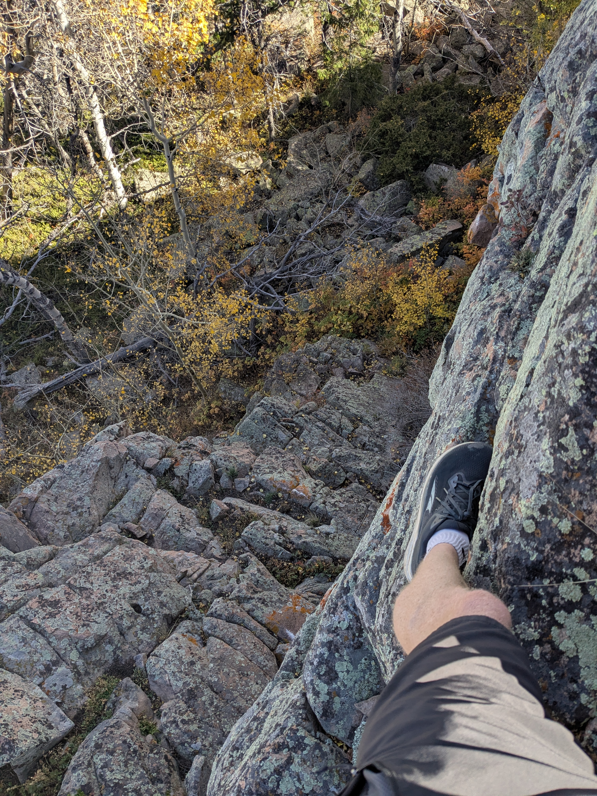
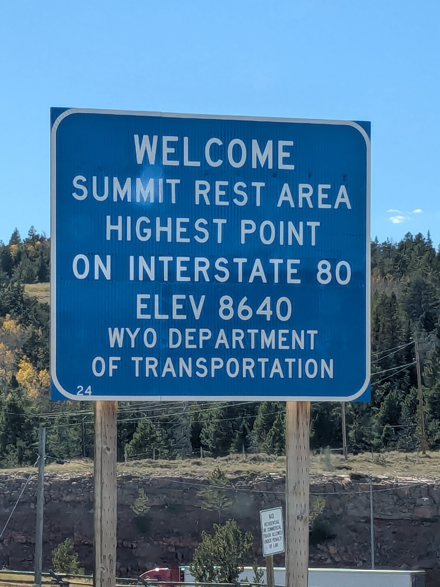
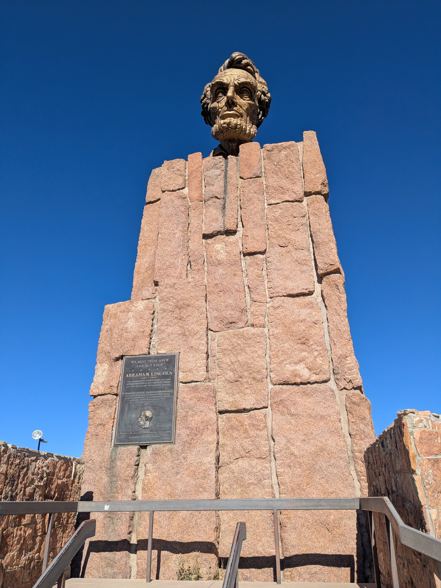

I was up in Cheyenne for work and my meeting ended early in large part due to the government shutdown that began the day before meant that all of the feds were immediately recalled to their stations. I had a long drive back to Denver, but my flight home wasn’t until the morning, so that meant I had some time for peakbagging. I was still nursing my Morton’s Neuroma, and that meant that hiking was generally out and running was infrequent. I didn’t have any trekking poles or even a serviceable backpack, so my options were somewhat limited. The nice folks at Black Tooth Brewing the previous day had recommended Curt Gowdy State Park, so I elected to head out West on Highway 210, but I quickly realized that the state park was more of a waterfront/campground than a mountain. I pulled over and looked a little more west, to the Medicine Bow-Routt National Forest, which is a nice series of peaks sandwiched between Highway 210 and Highway 80. I found the highest point in the forest and set my sights for that: Pole Mountain.
There was a nice parking lot right off the highway, and some confusing signs related to the legality of driving on the dirt road that traversed the final two miles to the start of the trail network. I opted to park in the obvious location and eat some road miles rather than risk getting into trouble. I later discovered that the road was totally fine to drive on.
I jogged the road miles, mildly annoyed after seeing several cars pass me after I was about a mile in. There is no formal trail up Pole Mountain, but I found some GPS tracks on Peakbagger that suggested a relatively easy side quest from a trail on the West side. However, I was currently on the East side, and all of the trails circled around the north or the south of the entire mountain. I had just wasted precious minutes needlessly running on the road, so I resolved to take a shortcut straight up the Eastern flank.
The country was fairly open, and the route went easily. Near the top rock features began to dominate, and I happily opted for some scrambling options rather than deal with the steep dirt. Glorious fall colors dotted the landscape below me.

I was getting sharp stabs of pain in my foot occasionally, but I didn’t care: I was on rock for the first time in over a year.

The summit was quite satisfying, with great views in 3 directions. I scrambled down off the back, planning to work my way over to the trail. The descent was surprisingly technical; that is to say, I managed to get cliffed out while not planning my route particularly carefully. A few class 3 moves that were almost certainly not the easiest way down, and I was moving through open country again. I angled down and northeast to a saddle and then started ascending back up the other side. This took me up to Leg Benchmark, which depending on your source is either flirting with the 200’ prominence cutoff to being a true subpeak of Pole Mountain, or is actually the taller of the two. Might as well tag both.


The ridge containing Leg Benchmark was actually guarded by a 40’ cliff band, which was a bit of a welcome surprise. I found a weakness and scrambled up, with 2 moves of 4th class, to the ridge. A super fun jog along the ridge to the North led me back to trail. The trail wrapped clockwise around Pole Mountain on fun terrain and led me back to the junction where I had originally left the road. A few unwelcome dusty, hot, thirsty road miles brought me back to the car.
The best route back towards Denver actually led me a bit West to meet up with I-80, where I discovered that at 8640 feet is the highest point on the whole interstate. It’s apparently a whole deal, and for some reason there is a giant bust of Abraham Lincoln. Because nothing better exemplifies the grandeur of the interstate highway system that a man who died a century before it was made.


I took a pit stop in Fort Collins to see one of my favorite bands, the Oh Hellos, kick off their tour. It was a bold choice to lead off on a tour starting at 7000’. The band was out of breath, but they still delivered! A few hours of sleep, and I caught the first flight home in the morning.